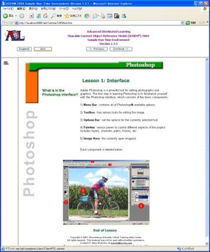

eラーニングについて
Web を利用した学習は大きく分けて同期型と非同期型に分けられる．同期型は講義映像のストリーミング配信など，ネットワーク技術を用いることで距離を隔てた教 師と学習者間での学習を実現したものであり，教師と生徒の両方が同時に参加しなければならないという時間の制約がある．WBT は非同期型分類され，Web サーバ上に置かれた教材をWeb ブラウザを用いて閲覧し自習を行う学習形態である．一般的なWBT システムの構成を図1 に，教材の提示例を図2 に示す．この学習形態は，いわば参考書や問題集を利用した独習をコンピュータ上の学習に置き換えたものである．同期型と違い時間の制約が無く，ネットワー クに接続できる環境があれば，時間と場所を選ばないで学習を行うことができる．
図1 一般的なWBTの構成

教材の内容としては図や説明文だけでなく，動画やシミュレーションを行うプログラムなど紙の参考書ではできないコンピュータならではの表現を用いることが
できる．また，一般的には教科書のように章・節といった教材内容の項目分けがされており，さらにページのような教材内容に対する提示単位がある．操作用の
インタフェースとしては，ページをめくるように学習を進行するためのボタンや，任意の項目に移動するためのハイパーリンク付きの目次などが提供され，これ
らを用いて学習を進める．学習の結果は学習履歴としてサーバ上に保存され，教師は学習者の進捗状況を把握することができる．図2 WBTでの教材の提示例
WBT は非同期型の学習形態であるため，e ラーニングシステムが学習者の理解度やつまづき箇所を調べ，できる限り各学習者に合わせた教材を提供することが重要である．また，WBTは教材作成のコス トが大きいにも関わらず，異るベンダーのプラットフォーム間で互換性がないことが問題となっていた．このため1995 年頃から欧米の様々な団体により教材の共通化が試みられ，現在ではSCORM 規格を中心とした標準化が行なわれている．